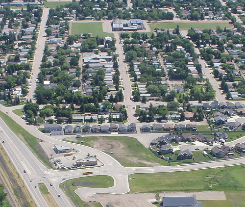
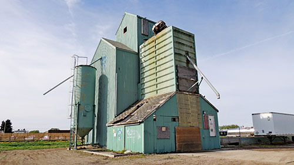

Coaldale is located between Lethbridge and Taber along the Alberta Highway 3. It is surrounded mostly by farmland and country roads, which makes commuting difficult for some commuting from the county into Coaldale. It is partially the reason housing in town is as expensive as it is. People living in town usually don’t drive as much as someone in Lethbridge or Calgary considering it is such a small town, and walking tends to be a lot cheaper than driving.
For those who do need to drive but can’t afford a vehicle, Coaldale also offers a Handi-Ride service, as well as an upcoming bus route for anyone in need of a commute down Highway 3. Coaldale isn’t hated for its seclusion though, as it is a very big aspect of its appeal! People around here (mostly) will tell you that the yard size and the privacy is their favourite part of living here.